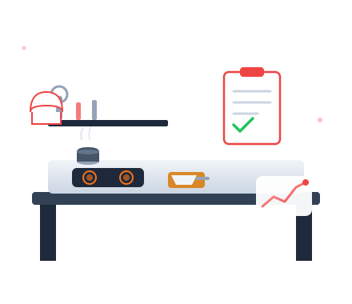

Kami membantu pelaku usaha F&B membangun fondasi bisnis yang kuat — konsep, alur dapur, standar operasional, hingga rantai pasok yang efisien dan konsisten.
Diskusikan Konsep Anda →
Layanan Konsultasi
Merumuskan konsep bisnis, positioning, dan menu yang balance antara cita rasa dan margin.
Tata letak dapur yang efisien — meminimalkan waktu produksi dan potensi bottleneck.
Standar kerja tertulis untuk dapur, service, dan kebersihan — konsisten di semua shift.
Strategi sourcing bahan baku, manajemen vendor, dan kontrol biaya (food cost).
Proyeksi biaya, BEP, dan rencana ekspansi outlet baru.
Training staf dapur & service agar sesuai standar yang ditetapkan.
Rekomendasi actionable, bukan sekadar teori.
Kami dampingi sampai implementasi berjalan.
Dari usaha rumahan yang mau naik kelas hingga jaringan resto multi-outlet.
Kenapa Kami
Banyak usaha F&B tumbang bukan karena rasa yang kurang enak, tapi karena operasional yang berantakan — food cost tidak terkontrol, dapur tidak efisien, dan SOP yang tidak konsisten antar shift.
Kami membantu Anda membangun sistem yang bisa berjalan tanpa harus Anda awasi 24 jam — dari resep yang terstandar sampai alur kerja dapur yang jelas.
Konsultasikan konsep Anda dengan tim kami sebelum mulai investasi besar.
Jadwalkan Konsultasi →